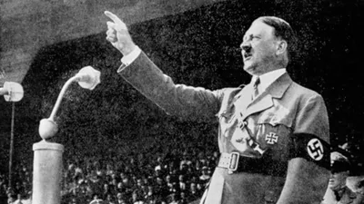

Adolf Hitler
Adolf Hitler was the leader of Germany from 1933 to 1945 and during this time, he forced his worldviews of territorial expansion

and racial supremacy beginning with Germany before spreading it to the majority of Europe. After the loss of World War I, Hitler began his rise in political power and in a little under 15 years had climbed all the way up to establishing his dictatorship in 1933. Within a few days Hitler began removing any ideology that he did not want in his regime. When Britain rejected the peace treaty offered after Germany invaded Poland, Hitler decided on capturing Norway and
Denmark before Britain would send forces to protect
them. When in the following months Britain still did not accept a peace treaty, Hitler began to
think about an invasion of their country. At the same time, he ordered the invasion of the Soviet
Union. His strategy was to try and declare peace with as many countries as he could while conquering
those that would not, before breaking the peace treaties. However, this strategy was soon eliminated
when Japan bombed Pearl Harbor and Germany had to declare war on the United States. Overall, Adolf
Hitler was a powerful and theatrical person who with more humane and noble ideas could have made a
much better impact on the world.
Hitler decided on capturing Norway and
Denmark before Britain would send forces to protect
them. When in the following months Britain still did not accept a peace treaty, Hitler began to
think about an invasion of their country. At the same time, he ordered the invasion of the Soviet
Union. His strategy was to try and declare peace with as many countries as he could while conquering
those that would not, before breaking the peace treaties. However, this strategy was soon eliminated
when Japan bombed Pearl Harbor and Germany had to declare war on the United States. Overall, Adolf
Hitler was a powerful and theatrical person who with more humane and noble ideas could have made a
much better impact on the world.References:
https://www.britannica.com/biography/Adolf-Hitler